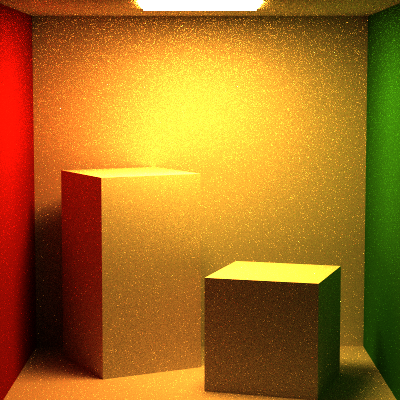
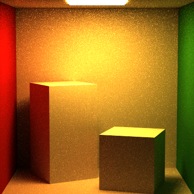

Monte Carlo Path Tracer
C++, OpenGL
Introduction
Monte Carlo Path tracing is a rendering technique that aims to represent global illumination as accurately as possible with respect to reality. The algorithm does this by approximating the integral over all the illuminance arriving at a point in the scene. A portion of this illuminance will go towards the viewpoint camera, and this portion of illuminance is determined by a surface reflectance function (BRDF). This integration procedure is repeated for every pixel in the output image. When combined with physically accurate models of surfaces, accurate models light sources, and optically-correct cameras, path tracing can produce still images that are indistinguishable from photographs.
Path tracing naturally simulates many effects that have to be added as special cases for other methods (such as ray tracing or scanline rendering); these effects include soft shadows, depth of field, motion blur, caustics, ambient occlusion, and indirect lighting, etc.
Due to its accuracy and unbiased nature, path tracing is used to generate reference images when testing the quality of other rendering algorithms. In order to get high quality images from path tracing, a large number of rays must be traced to avoid visible noisy artifacts.
-

Draggo
Full Lighting Integrator; 1225 samples/pixel; Recursion depth: 10; 1024x1024 pixels
Prominent Techniques: Environment Mapping; Glass Materials;
-

Party Animals
Full Lighting Integrator; 900 samples/pixel; Recursion depth: 10; 1024x1024 pixels
Prominent Techniques: BVH Acceleration
-

Veach Scene
Full Lighting Integrator; 2500 samples/pixel; Recursion depth: 10; 768x512 pixels
Prominent Techniques: Multiple Important Sampling
-

Spectrum
Full Lighting Integrator; 625 samples/pixel; Recursion depth: 10; 1024x512 pixels
Variety of Materials
-

Environment Map
Full Lighting Integrator; 400 samples/pixel; Recursion depth: 5; 512x512 pixels
Prominent Techniques: Environment Mapping
-

Blue Orb
Volumetric Integrator; 100 samples/pixel; Recursion depth: 5; 512x512 pixels
Prominent Techniques: Volumetric Rendering via Ray Marching
-

Goursat's Cube
Full Lighting Integrator; 400 samples/pixel; Recursion depth: 5; 512x512 pixels
Prominent Techniques: Implicit Surface Rendering
-

Transmissive Sphere
Full Lighting Integrator; 400 samples/pixel; Recursion depth: 10; 512x512 pixels
Prominent Techniques: Transmissive Material
Features:
Volumetric Rendering
-

Blue Orb
Participating Media was rendered by ray marching through the space.
Parameters such as the absorbance, emittance, density, scattering, and color can be defined and tuned for the medium.
The blue orb scene does not have a back wall and so its easy to identify the emissivity of the medium.
-

Cornell Box with Participating Media (Parameter set 1)
Participating Media was rendered by ray marching through the space.
Parameters such as the absorbance, emittance, density, scattering, and color can be defined and tuned for the medium.
The cornell box has a foggy appearance because absorbance and scattering are the most prominent effects of the rendered medium.
-

Cornell Box with Participating Media (Parameter set 2)
Participating Media was rendered by ray marching through the space.
Parameters such as the absorbance, emittance, density, scattering, and color can be defined and tuned for the medium.
The cornell box has a foggy appearance because absorbance and scattering are the most prominent effects of the rendered medium.
-

Grossly Incandescent Blue Orb
Participating Media was rendered by ray marching through the space.
Parameters such as the absorbance, emittance, density, scattering, and color can be defined and tuned for the medium.
The blue orb scene does not have a back wall and so its easy to identify the emissivity of the medium.
BVH Acceleration Structure

Mario; 5k triangles;
With BVH at 1 sample/pixel: 4594 milliseconds;
Without BVH at 1 sample/pixel: 454041 milliseconds
Render Time Sped up 98.83347 times (or 9883.347% speed increase)
BVH Construction Time For Wahoo.obj: 156 milliseconds
Various Light Sources
-

Environment Map as a Light Source
Full Lighting Integrator; 400 samples/pixel; Recursion depth: 10; 512x512 pixels
-

Point Light
Full Lighting Integrator; 400 samples/pixel; Recursion depth: 10; 512x512 pixels
-

Spot Light
Full Lighting Integrator; 400 samples/pixel; Recursion depth: 10; 512x512 pixels
Complex Implicit Surfaces

If an implicit surface can be defined by an equation equating to zero, it can define a Signed Distance Field(SDF); I used SDF's during intersection tests to determine if we're inside, outside, or actually intersecting the object.
Thin Lens Camera

Thin Convex Camera Lenses can be mimicked by having rays shot out from the camera pass through some point sampled on the lens and then using this point to change the original ray based on the properties of the lens. The technique is just an approximation for the actual math and produces better renders with more samples/pixel.
Various BSDF's
-
Draggo
Matte Materials; Specular Materials; Glass Materials;
-
Party Animals
Matte Materials; Specular Materials; Glass Materials;
-

Spectrum
Matte Materials; Specular Materials; Textured Matte Materials; Rough Mirror Materials
-
Transmissive Material
-

Glass Material
-
Pure Specular Surface
-

Gradient Mirror
Numerous Material models including Transmissive and Micorfacet material models were implemented. Each Material is defined by properties that give the path tracer a great deal of versatility and variety for composing scenes.
Integrators
Full Lighting Integrator
Direct Lighting Integrator
Naive Integrator
-

Veach Scene
Full Lighting Integerator; 2500 Samples; Recursion Depth 10;
-

Veach Scene
Direct Lighting Integerator; 900 Samples; Recursion Depth 10;
-

Veach Scene
Naive Integerator; 900 Samples; Recursion Depth 10;
-

Cornell Box
Direct Lighting Integerator; 2500 Samples; Recursion Depth 10;
The differences amongst the 3 major integrators is pretty apparent on comparing the renders:
-
Naive Integrator: Renders scenes based on the Light Transport Equation, but implemented in a very naive sense, without any multiple important sampling, rusian roullete termination, etc.
-
Direct Lighting Integrator: Renders the scene without any global illumination by simply ignoring secondary bounces of the ray once it hits something in the scene.
-
Full Lighting Integrator: Renders the scene based upon the Light Transport Equation but takes into account Multiple Important Sampling, Russian Roullete Termination, Conditionals for various types of light sources, and is implemented in an iterative rather than recursive manner. All these features let it avoid blown out images that can occur in the naive integrator, keep global illumination, terminate rays early with very little impact on the render quality, etc.
A volumetric Integrator exists but it is essentially the full lighting integrator that will ray march through the scene in addition to everything else to account for the influence of the participating medium.
Multiple Important Sampling


Cornell Box, 2 lights; WRONG!; No MIS;
Cornell Box, 2 lights; Correct!; With MIS;
The color at every point in the scene is correctly scaled via Multiple Important Sampling by accounting for the contribution of each incoming ray at that point with respect to the actual energy that the light rays bring in. This changes with the scene because it can depend on a lot of biases in terms of sampling that we introduce to get the image to converge faster. These biases include light important sampling, BSDF important sampling, consine weighted sampling, etc. Instead of relying on anyone of these biased forms of sampling we get the best result across all kinds of scenes by taking a weighted average of them.
Power & Balance Heuristics


Balance Heuristic
Power Heuristic
They are used to weight the energy contributions of rays to assist with Multiple Important Sampling. Power and Balance Heuristics are just different rules of thumb for the weighting
Russian Roullete Termination
It is a technique employed to cut short the ray bounce depth once the energy being returned from the ray falls below a randomised threshold. The loss in energy is compensated by scaling up the existing energy value by an appropriate amount. When averaged over a bunch of samples, the loss in accuracy of the render is barely noticeable if at all.
Primitive Handling & Sampling
The Path Tracer handles various primitives such as implicit surfaces, triangles for meshes, and the basic ones like cubes, spheres, discs, and squareplanes.
The sampler written for the path tracer is responsible for creating samples on the various primitives listed above. The samples generated for the shapes start from a uniform stratified distribution on a square plane which are then warped so as to resemble whatever shape we desire, also allowing for the introduction of biases such as cosine weighted sampling, in a controllable manner and from a common starting point.